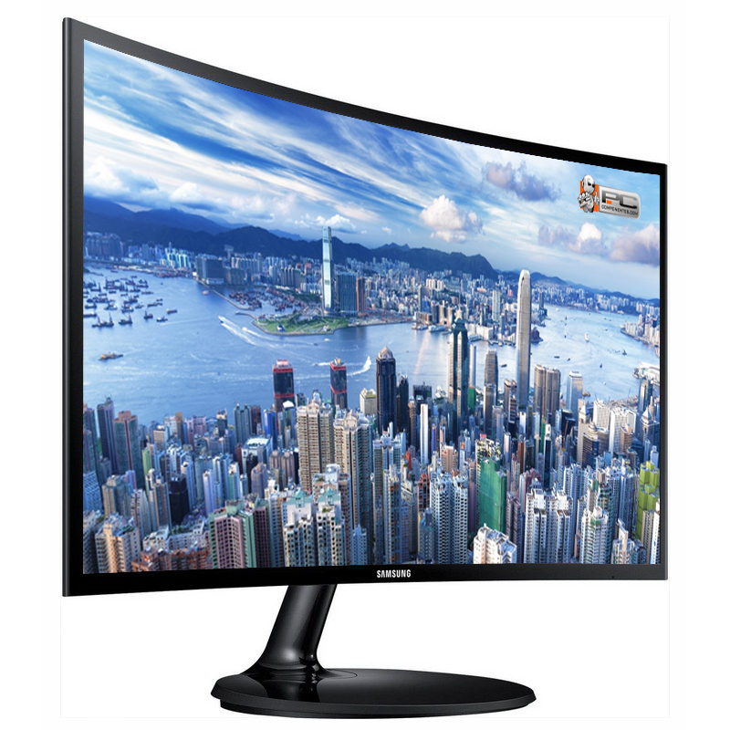
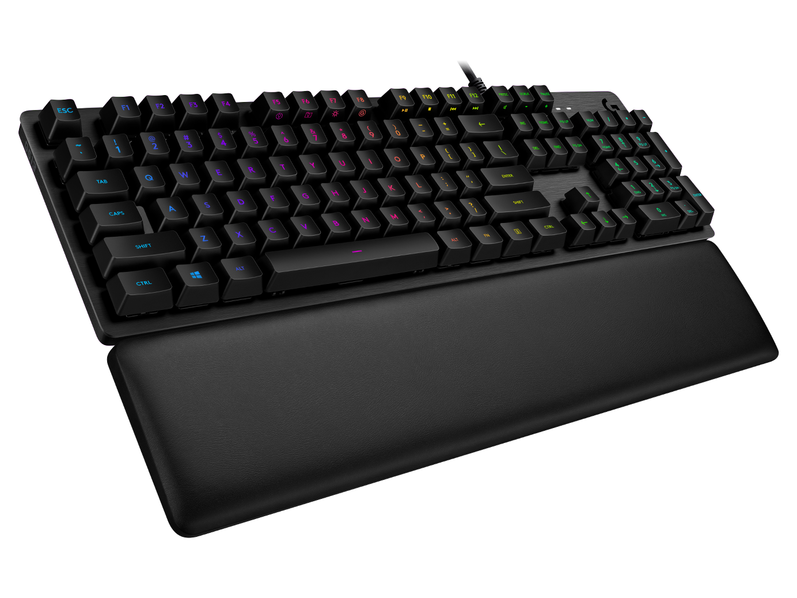
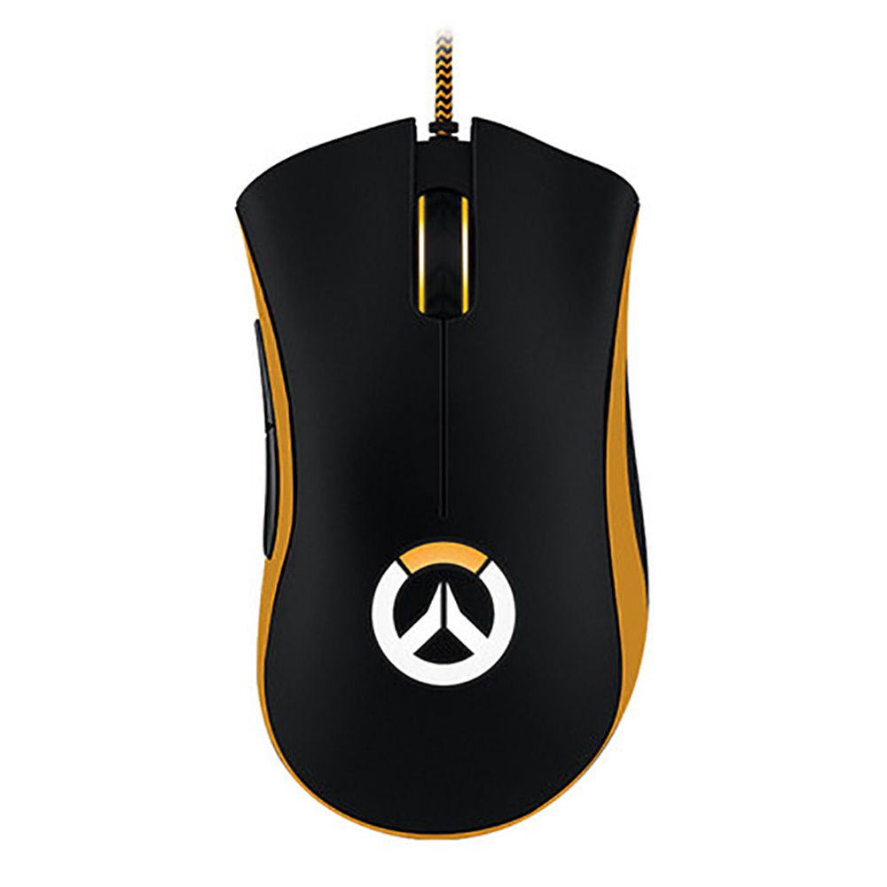

Las computadoras hoy
La importancia de la computadora en la actualidad ha avanzado mucho ya que hoy en día y desde el principio existió una gran demanda para poder obtener beneficios
y estrategias que hicieran más fácil la vida del hombre por lo cual en los avances tecnológicos ya es muy común que siempre se utilice la computadora como mayor
herramienta para lograr alcanzar las expectativas esperadas por el usuario, también en la forma de enseñanza hoy en día la computadora a logrado obtener más demanda
y que facilita tareas, exposiciones, investigaciones ya sea de forma de aprendizaje o académica.
Una computadora es una colección de circuitos integrados y otros componentes relacionados que puede ejecutar con exactitud, rapidez y de acuerdo a lo indicado por
un usuario o por otro programa, una gran variedad de secuencias o rutinas de instrucciones que son ordenadas, organizadas y sistematizadas en función a una amplia
gama de aplicaciones prácticas y precisamente determinadas, proceso al cual se le ha denominado con el nombre de programación. La computadora, además de la rutina
o programa informático, necesita de datos específicos que deben ser suministrados, y que son requeridos al momento de la ejecución, para proporcionar el producto final
del procesamiento de datos, que recibe el nombre de "output" o de salida.

Las partes de una computadora
La computadora es, por mucho, una de las invenciones que más beneficios le han dado a la humanidad. Su enorme capacidad para procesar datos la convierten en una
parte fundamental en el desarrollo de la ciencia.
Pero… ¿qué es lo que hace posible que esta poderosa máquina electrónica funcione? En esta ocasión, nos enfocaremos en la computadora tradicional. Ya que a fin de
cuentas, sin importar de qué tipo de computadora se trate, todas deben llevar los mismos componentes internos y externos. Lo único que realmente cambia es la
estructura, brindando más estética o portabilidad.
- Caja o CPU
-
Es una de las partes de la computadora más importantes, y por lo general es una caja de una computadora generalmente es de plástico y metal. Internamente está compuesta por una tarjeta madre o placa base, un procesador o unidad central de procesamiento (CPU), una fuente de alimentación, memoria RAM, puede tener una tarjeta gráfica y al menos una unidad de almacenamiento que puede ser un disco duro o SSD. La parte delantera, cuenta con los botones de encendido y apagados, luces que indican el estado de la PC y puede tener unidades ópticas.

- Monitor
-
El monitor va conectado a la salida de la tarjeta gráfica (VGA, DVI o HDMI) en la caja de la computadora, bien sea una dedicada o la integrada en la placa base. El monitor es una de las partes de la computadora más fundamentales, ya que permite ver todo lo que ocurre en el ordenador desde la pantalla.

- Teclado
-
Este es un periférico muy importante, ya que permite controlar la computadora. Existen varios tipos de teclados, pero en son muy parecidos y con ellos se pueden llevar a cabo las mismas tareas.

- Mouse
-
Junto con el teclado, el ratón también es una de las partes de la computadora que permite controlarla. Es un dispositivo señalador, que permite señalar, seleccionar y mover cualquier objeto en la pantalla. Existen dos tipos de ratón, que son óptico y mecánico. El ratón óptico es muy fácil de reconocer, ya que utiliza luz (roja o azul) y un ojo electrónico que permite detectar el movimiento sobre una superficie. Este tipo de ratón es bastante ligero y es muy fácil de limpiar.

 Gerardo Loperena |
Gerardo Loperena |
 Gerardo LB
Gerardo LB